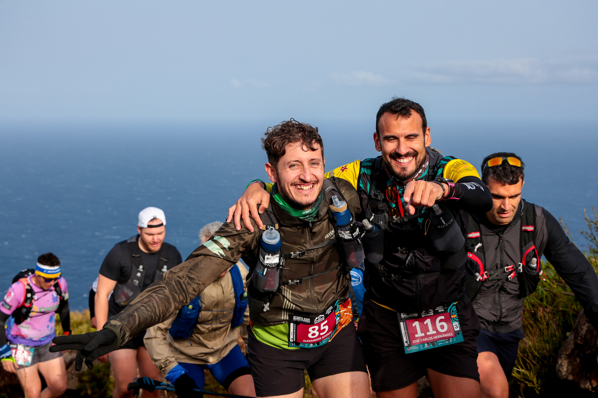

Long before sunrise on March 14, runners gathered in the small square outside the Iglesia de Santo Domingo, in the northern municipality of Garafía, for the ninth running of the Acantilados del Norte Skyrace by Dynafit — a 29-kilometre traverse of La Palma's volcanic coastline that has become one of the most demanding dates on the skyrunning calendar. This year the race carried extra weight: it opened the European leg of the 2026 Skyrunner World Series, the circuit's first stop on the continent after two rounds in South America.
Sara Alonso (Asics) set the tone from the opening kilometre, leading the women's field the entire way to the finish in Barlovento and stopping the clock at 3:00:43 — a new course record. It capped a quick turnaround for the Spaniard, who had been told to take a month off training only weeks earlier; she called the run "the reward for months of work" and said she left the island with two of her three goals for the day met. Patricia Pineda (La Sportiva) came home second in 3:06:12, with Marta Martínez completing the podium in 3:07:30.
The men's race stayed unresolved until the final descent into Barlovento, where New Balance's Manuel Merillas shook off a close-following Frédéric Tranchand (Merrell) to win in 2:31:54 — just 1:18 ahead of the Frenchman after well over two hours of racing. Alain Santamaría (X-Bionic Integrity), coming off a win at the Half Transgrancanaria earlier this year, rounded out the podium in 2:36:09.

The route itself is part of the story: a stretch of the old GR 130 coastal path once walked by fishermen between Garafía and Barlovento, climbing and dropping through ravines and volcanic cliffs for more than 2,000 metres of accumulated gain across the 29km. The direction alternates each year between the two municipalities, and this edition's race week followed the usual build-up — school visits from Merillas and Martínez on March 10, bib collection and elite athlete presentations in Santa Cruz de La Palma on the 12th and 13th, and a closing ceremony with the traditional paella popular back in Barlovento.
Image Media's team on the island — Eduardo, Nomade and Luan — covered the race start to finish. The Skyrunner World Series continues on April 11 at Calamorro Skyrace.